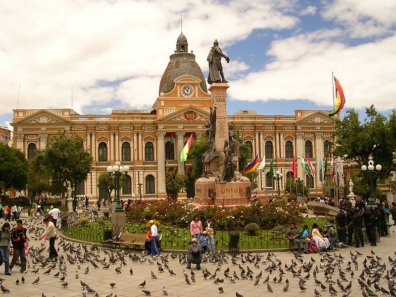
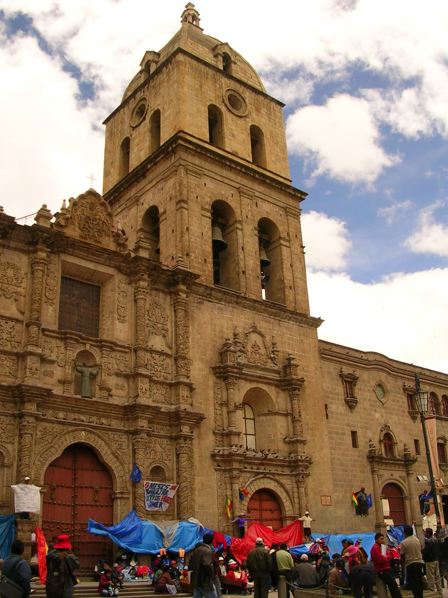
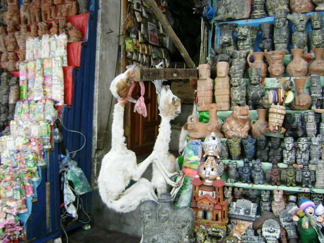

Ciudad de La Paz
La Paz, oficialmente Nuestra Señora de La Paz, o La Paz de Ayacucho, es la sede de gobierno de Bolivia. Es el centro político, financiero, social, académico y cultural más importante del país, además de ser la ciudad con mayor nivel de desarrollo sostenible en Bolivia. Con una población estimada de 816 000 habitantes (en 2020), La Paz es la tercera ciudad más poblada del país, detrás de Santa Cruz de la Sierra y la vecina El Alto. El área metropolitana de La Paz, que incluye a los municipios vecinos de El Alto, Viacha, Achocalla, Mecapaca, Palca, Laja y Pucarani, es la segunda más poblada del país, llegando a tener una población estimada de 2,1 millones de habitantes en 2020
Lugares turisticos en La Paz:
La plaza Murillo es la plaza principal de la ciudad de La Paz, sede de gobierno de Bolivia. Se convirtió en el centro del poder político del país después del traslado del Poder Ejecutivo a La Paz como resultado de la Guerra Federal de 1899.

Ubicacion a google maps
La Basílica Menor de San Francisco de la ciudad de La Paz, Bolivia, es un templo católico bajo la advocación de San Francisco de Asís. Está situado en el centro de la ciudad. Forma parte del conjunto conventual que da el nombre a la plaza adyacente Plaza Mayor de San Francisco.

Ubicacion google maps
El Mercado de las Brujas es un mercado callejero ubicado en La Paz, Bolivia. Se encuentra en la calle Linares, en el centro de la ciudad, en las cercanías de la Basílica de San Francisco. Entre las principales mercancías vendidas en el Mercado de las Brujas, dirigida por los brujos locales conocidos como yatiris, se incluyen pociones, ranas secas, plantas medicinales como retama y armadillos utilizados en los rituales de Los Andes.

Ubicacion google maps
Volver a pagina principal